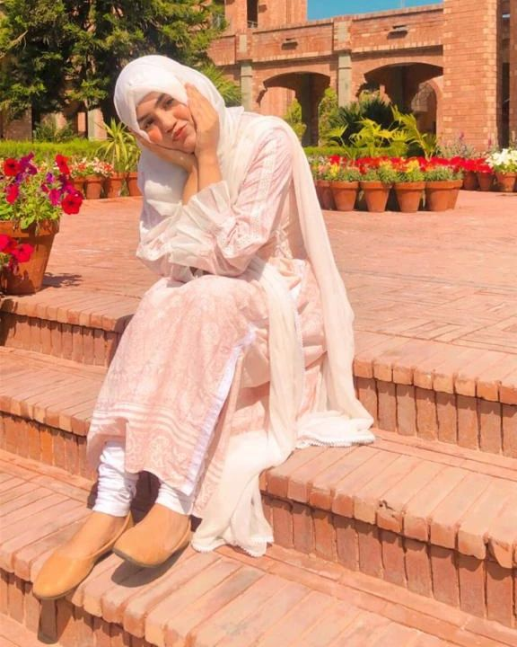

Hello, my dearest 'Anam Cara.' 🌙 Anam, "The moon is beautiful, isn't it? 🙃🫠" 🌟 As we step into a new year, the 21st in my life, this one holds a unique place in my heart. It's special because I'm beginning the year with the person I love the most in this world. 🎉 I feel incredibly blessed to have someone with whom I can share everything, someone I trust completely. That's why, even if it's just through messages, I wanted you to be a part of this moment. Happy New Year, Anam! May this year bring you abundant happiness, love, and success. 🥂
As the current year concludes and a fresh one unfolds, I want to express how much important you are to me. 🌸 It's strange that amongst all the happenings of this year, I remember every detail about you. I recall the day in the university garden near N-Block when I first saw you. Back then, I had no idea that you would become so significant and important to me. Although I didn't have feelings for you at that moment, I vividly remember you using your mobile phone and wearing a cream-colored staller. Somehow, I felt an unexplainable desire to talk to you, even though we were strangers. 🌷
When you playfully teased me in the WhatsApp group, the one you guys created as a "CR-free group" , I found joy in it. Your voice and words were like a therapeutic balm, even before we became friends. The way you seamlessly entered my life and became a comforting habit was the most beautiful part of my journey. I didn't realize when affection turned into love. But there's something I need to tell you—my love for you formed gradually. Your personality, your voice, your hair, your eyes, your humor, the way you looked away and smiled—gradually, it all became clear to me that you were exactly what I was looking for. ☀️ I didn't fall in love because I was lonely or lacked someone in my life. Embracing my solitude was my favorite thing, but your light and support compelled me to step out of the darkness. ☀️
I don't know exactly when I started loving you, but the feeling is beautiful, Anam. I acknowledge my imperfections; I know I might not be the best for you, and I even hold on to some self-hate. However, recognizing my love for you prompted me to strive for self-improvement. I'm aware that you deserve someone better than me, but my heart refuses to stop feeling for you. I'm on a journey to become a person worthy of you, addressing my issues, physical and financial. Can fixing my problems make you consider my love, Anam? I don't want to force my love on you, but I hope for a miracle—what if you start feeling for me too? 🌈
I genuinely want you to be happy, to find someone you love and who brings joy throughout your life. But if you ever have to consider someone else, could it be me, once my problems are resolved? Please don't see this as an imposition; I'm simply sharing my feelings and thoughts directly with you, because last time you came to know about it in a strange situation. Yes, it's true—I love you. And I can assure you that nobody can care for your happiness more than I do. But I understand that when you love someone, that person becomes the best for you. So, I'm sharing my love for you and expressing that I'll continue waiting for you. You're my friend, my best friend. I'd be the happiest if you find that special person you love, and you'll always be my best friend. Yet, deep down in my heart, there'll be a waiting, a hope for some miracle that makes you realize I can be the right person to spend a lifetime with. 💖
But again, I am not saying you to feel the same for me. I know, it is not in our hand that should we like someone or not. I am just telling about mine and there would be no affect on our friendship. You would always be my best friend. My "Anam Cara".
Happy New Year, Anam. May your happiness glow and brighten others' lives with your light. Remember, I felt a strong bond with you even before knowing you, and my love for you is entirely unconditional and pure. I wanted to start this new year with the person I love most in the world—you, that's why I am here right now. Be happy, Anam, and know that I'm always on your side, ready to listen, without judgment. You'll always be right for me, and I'll always cherish you. 🌟
Happy Happy New Year, Anam!❤️
